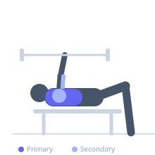

Exercise guide / Decline Bench Press 3-Second Pause
Decline Bench Press 3-Second Pause
A decline barbell bench press with a deliberate three-second pause at the chest. The pause eliminates the elastic energy stored in the pectoral musculature and connective tissues, requiring a true concentric contraction from a dead stop. This powerlifting-derived technique builds strength off the chest and develops the ability to generate force without momentum, which transfers directly to competition bench press and overall chest strength.
Primary muscles
pectoralis major sternal
Secondary muscles
triceps long head
triceps lateral head
deltoid anterior
Stabilizers
pectoralis minor
Equipment
Standard Barbell
Adjustable Bench (Incline / Decline)
Power Rack (Squat Cage)


Starting position
- Lie on a decline bench (15–30 degrees) with feet secured. Grip the barbell at standard bench press width. Unrack and hold above the lower chest.
Setup
- Reduce weight by 15–20% from your standard decline press weight. The 3-second pause creates significantly greater demand. Use collars. Spotter required.
Steps
- Step 1: Unrack and position the bar above the lower chest.
- Step 2: Lower the bar to the lower chest with control — do not bounce.
- Step 3: At chest contact, hold the bar motionless for a full 3-second count. Maintain tension throughout — bar stays on chest but all muscles remain actively engaged.
- Step 4: At the end of the pause, press powerfully to full lockout without bouncing or using momentum.
Coaching cues
- Press tight even during the pause — do not go limp at the bottom
- The pause should feel uncomfortable — that discomfort is the training stimulus
Breathing
- Inhale before descent, hold (Valsalva) through the pause and press, exhale at the top.
Range of motion
- Full range from lockout to chest contact. Bar must touch the chest during the pause — no floating.
Tempo
- 2s descent — 3s pause — explosive press up
Common mistakes
- Bouncing the bar off the chest instead of pausing — this defeats the technique entirely
- Relaxing completely during the pause — maintain active tension even while stopped
- Underestimating the weight reduction needed — the pause adds enormous difficulty
Safety
- Always use a spotter for paused pressing — muscular fatigue mid-set is abrupt and unpredictable
- Secure feet firmly on the decline bench
- Use safety pins if training without a spotter
Training
- strength: 2–5 reps
- strength: 4–6 sets
- Rest: {'strength': 240}